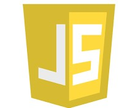

Number of jobs:24,000
Average Annual Salary: $118,000
JavaScript is a dynamic, weakly typed, Prototype-based, high-level, interpreted programming language. Its take the position of one of the core technologies of the world wide web. It enables the creation of interactive webpages.
Initially, only client-side web browsers were implemented in JavaScript, but it is now embedded in various host software including server side in web servers and also in run-time environments that make it function on mobile, and desktop applications.
Even though it carries a similarity in its name with Java Language, it is distinct from Java by its dynamic functionality, human-readable code, etc.
The supporting technologies or languages that are related to JavaScript are JSON (Data Interchange Format), jQuery (Client-side HTML Scripting), Angular and Angular (Web Application Frameworks for developing SPA), React (JS Library), asm.js etc.
Standardization of web Assembly by W3C made programming Languages such as C, C++, Java as well as JS to author client-side code for the world wide web. However, JavaScript has now risen to biblical levels and experts say that its time to go down…and yes….partially correct too.
As the preferred language for client-side development varies along with the web assembly back ends, JavaScript is at times confusing to use owing to the availability of several web options.